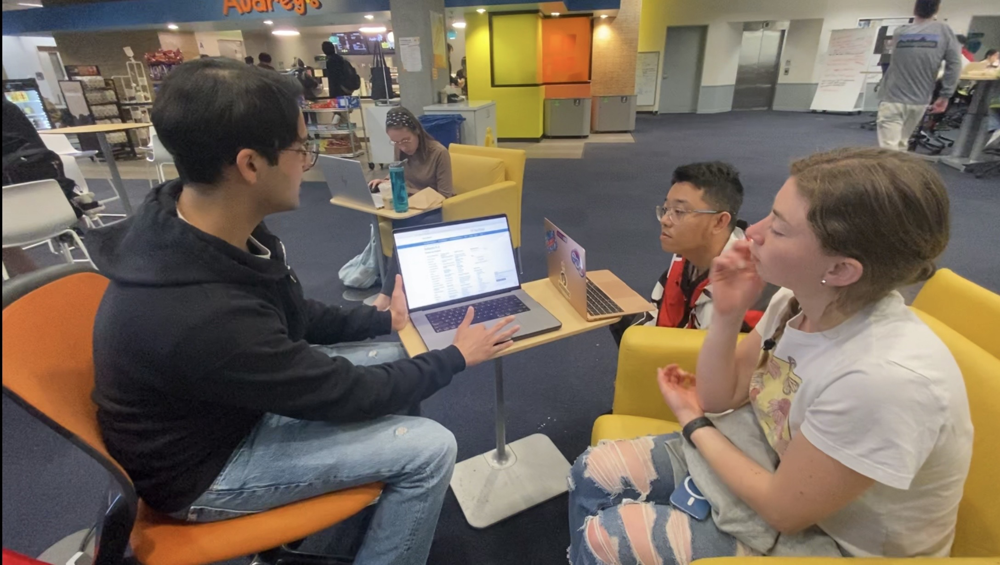

<!DOCTYPE html>
<html lang="en">
<head>
    <!-- Google tag (gtag.js) -->
    <script async src="https://www.googletagmanager.com/gtag/js?id=G-EZGJYDSTZ5"></script>
    <script>
      window.dataLayer = window.dataLayer || [];
      function gtag(){dataLayer.push(arguments);}
      gtag('js', new Date());
      gtag('config', 'G-EZGJYDSTZ5');
    </script>
    <style></style>
    <meta charset="UTF-8">
    <meta name="viewport" content="width=device-width, initial-scale=1.0">
    <title>Yi Lu | UCSD Library Case Study</title>
    <script src="https://unpkg.com/react@18/umd/react.development.js"></script>
    <script src="https://unpkg.com/react-dom@18/umd/react-dom.development.js"></script>
    <script src="https://unpkg.com/@babel/standalone@7.23.0/babel.min.js"></script>
    <script src="https://cdn.tailwindcss.com"></script>
    <link rel="preconnect" href="https://fonts.googleapis.com">
    <link rel="preconnect" href="https://fonts.gstatic.com" crossorigin>
    <link href="https://fonts.googleapis.com/css2?family=Inter:wght@300;400;500;600&family=Plus+Jakarta+Sans:wght@300;400;600;700&display=swap" rel="stylesheet">
    <style>
        *, *::before, *::after { box-sizing: border-box; }

        body {
            background-color: #ffffff;
            font-family: Inter, sans-serif;
            color: #1a1a1a;
            -webkit-font-smoothing: antialiased;
            scroll-behavior: smooth;
        }

        .page-wrapper {
            opacity: 0;
            animation: 0.7s ease 0.05s 1 normal forwards running pageFadeIn;
        }
        @keyframes pageFadeIn { 100% { opacity: 1; } }

        .reveal {
            opacity: 0;
            transform: translateY(24px);
            transition: opacity 0.65s cubic-bezier(0.23, 1, 0.32, 1), transform 0.65s cubic-bezier(0.23, 1, 0.32, 1);
        }
        .reveal.visible { opacity: 1; transform: translateY(0); }

        #scroll-progress {
            position: fixed;
            top: 0; left: 0;
            height: 2px;
            background: #1a1a1a;
            z-index: 9997;
            width: 0%;
            transition: width 0.08s linear;
        }

        .nav-link {
            display: block;
            border-left: 1px solid transparent;
            padding-left: 0;
            transition: color 0.2s, border-color 0.2s, padding-left 0.2s;
        }
        .nav-link:hover, .nav-link.active {
            color: #1a1a1a;
            border-left-color: #1a1a1a;
            padding-left: 12px;
        }
        .nav-link.active { font-weight: 500; }

        .content-section { margin-bottom: 100px; }
        #overview { margin-bottom: 0; }

        .img-wrapper { position: relative; overflow: hidden; width: 100%; }
        .img-wrapper img {
            width: 100%;
            height: auto;
            display: block;
            object-fit: contain;
        }

        .stat-block {
            border-top: 1px solid #e5e7eb;
            padding-top: 20px;
            transition: border-color 0.3s;
        }
        .stat-block:hover { border-color: #1a1a1a; }
        .stat-number {
            font-size: 3rem;
            font-weight: 600;
            line-height: 1;
            color: #111827;
        }

        .callout-box {
            background: #f8f9fa;
            border-left: 2px solid #1a1a1a;
            padding: 24px 28px;
            border-radius: 0 12px 12px 0;
        }

        .hmw-box {
            background: #1a1a1a;
            color: #fff;
            border-radius: 16px;
            padding: 40px;
            margin: 40px 0;
        }

        .back-link {
            display: flex;
            align-items: center;
            gap: 4px;
            font-size: 11px;
            color: #9ca3af;
            text-decoration: none;
            margin-bottom: 80px;
            transition: color 0.2s, gap 0.25s;
        }
        .back-link svg { transition: transform 0.25s; }
        .back-link:hover { color: #1a1a1a; gap: 8px; }
        .back-link:hover svg { transform: translateX(-4px); }

        .footer-next {
            font-size: 11px;
            text-transform: uppercase;
            letter-spacing: 0.3em;
            color: #9ca3af;
            text-decoration: none;
            transition: color 0.2s, letter-spacing 0.3s;
        }
        .footer-next:hover { color: #1a1a1a; letter-spacing: 0.42em; }

        @media (max-width: 768px) { .stat-number { font-size: 2.25rem; } }

        .rc-label {
            font-size: 13px;
            font-weight: 600;
            color: #6b7280;
            text-transform: uppercase;
            letter-spacing: 0.08em;
            margin-bottom: 8px;
            display: block;
        }
        .rc-h2 {
            font-family: 'Plus Jakarta Sans', sans-serif;
            font-size: 1.65rem;
            font-weight: 700;
            color: #111827;
            line-height: 1.25;
            margin-top: 10px;
            margin-bottom: 16px;
            max-width: 52rem;
        }
        .rc-h3 {
            font-family: 'Plus Jakarta Sans', sans-serif;
            font-size: 1.1rem;
            font-weight: 700;
            color: #111827;
            line-height: 1.4;
            margin-top: 10px;
            margin-bottom: 12px;
        }
        .rc-body {
            font-size: 15px;
            font-weight: 400;
            color: #6b7280;
            line-height: 1.75;
            max-width: 42rem;
            display: block;
        }
        .rc-body strong { color: #111827; font-weight: 600; }

        .section-label {
            font-size: 13px;
            font-weight: 600;
            color: #6b7280;
            letter-spacing: 0.06em;
            text-transform: uppercase;
            margin-bottom: 20px;
            display: block;
        }

        .iter-badge {
            font-size: 11px;
            font-weight: 600;
            color: #6b7280;
            border: 1px solid #e5e7eb;
            border-radius: 6px;
            padding: 4px 10px;
            text-transform: uppercase;
            letter-spacing: 0.08em;
            background: #f9fafb;
        }

        .takeaway-item {
            display: flex;
            gap: 16px;
            align-items: flex-start;
            padding: 24px 0;
            border-bottom: 1px solid #f0f0f0;
            transition: padding-left 0.25s;
        }
        .takeaway-item:last-child { border-bottom: none; }
        .takeaway-item:hover { padding-left: 8px; }
    </style>
</head>
<body>
    <div id="scroll-progress"></div>
    <div id="root"></div>

    <script type="text/babel" data-presets="react">
    const { useEffect, useRef, useState } = React;

    function Reveal({ children, delay = 0, className = '' }) {
        const ref = useRef(null);
        useEffect(() => {
            const obs = new IntersectionObserver(([e]) => {
                if (e.isIntersecting) { e.target.classList.add('visible'); obs.disconnect(); }
            }, { threshold: 0.07 });
            if (ref.current) obs.observe(ref.current);
            return () => obs.disconnect();
        }, []);
        return (
            <div ref={ref} className={`reveal ${className}`} style={{ transitionDelay: `${delay}s` }}>
                {children}
            </div>
        );
    }

    function useCounter(target, duration, active) {
        const [val, setVal] = useState(0);
        const started = useRef(false);
        useEffect(() => {
            if (!active || started.current) return;
            started.current = true;
            const numeric = parseFloat(String(target).replace(/[^0-9.]/g, ''));
            const t0 = performance.now();
            const tick = now => {
                const p = Math.min((now - t0) / duration, 1);
                const ease = 1 - Math.pow(1 - p, 3);
                setVal(Math.round(ease * numeric));
                if (p < 1) requestAnimationFrame(tick);
            };
            requestAnimationFrame(tick);
        }, [active]);
        return val;
    }

    function StatCard({ value, suffix = '', label, description, delay = 0 }) {
        const ref = useRef(null);
        const [active, setActive] = useState(false);
        const count = useCounter(value, 1400, active);
        useEffect(() => {
            const obs = new IntersectionObserver(([e]) => {
                if (e.isIntersecting) { setActive(true); obs.disconnect(); }
            }, { threshold: 0.4 });
            if (ref.current) obs.observe(ref.current);
            return () => obs.disconnect();
        }, []);
        return (
            <div ref={ref} className="stat-block reveal" style={{ transitionDelay: `${delay}s` }}>
                <p className="stat-number">{active ? count : 0}{suffix}</p>
                <p className="rc-label mt-3 mb-1">{label}</p>
                <p className="text-xs text-gray-500 font-normal leading-relaxed">{description}</p>
            </div>
        );
    }

    function CaseImg({ src, alt }) {
        return (
            <div className="img-wrapper">
                
            </div>
        );
    }

    function CaseStudyPage() {
        const [activeSection, setActiveSection] = useState('overview');

        const navItems = [
            { label: "Overview",       id: "overview" },
            { label: "Problem",        id: "problem" },
            { label: "User Research",     id: "user-research" },
            { label: "Research Insights", id: "research-insights" },
            { label: "Ideation",          id: "ideation" },
            { label: "Design Changes", id: "design-changes" },
            { label: "Reflection",     id: "reflection" },
        ];

        const base = "https://images.squarespace-cdn.com/content/v1/68d5a437b484267b9999188c/";
        const img = {
            hero:          base + "ab55af71-74dc-4318-8849-e15fa44026f5/UC+San+Diego+Library+Case+Study.png",
            oldDesign:     base + "dc5765c3-2c67-41af-95b3-8eefc94b20fa/UC+San+Diego+Library+OLD+DESIGN.png",
            usabilityTest: base + "bddf8d95-6ed6-48e6-84a2-91d83b59f466/Usability+testing+in+the+library.png",
            interviews:    base + "77961811-aab1-4e32-8a9d-297b71057aa2/User+Interview+Insights.png",
            pillars:       base + "03a5acd2-cb59-42f3-9a2a-b4e0c4e5d052/opportunity_pillars+1.png",
            crazy8s:       base + "560a911f-52be-4d9d-a545-03980949d478/crazy+8s.png",
            change1:       base + "b40f4bcb-e0e9-4f14-b559-c443dc7976fc/CHANGE+1+-+SEO+Ttile.png",
            change2:       base + "29d5f3e6-c594-4dc7-bb6f-39d505a3a306/CHANGE+2+-+SEARCH.png",
            change3:       base + "f4825c7d-dcf5-45f0-a7da-551a18af766a/CHANGE+3+-+Accessibility.png",
        };

        useEffect(() => {
            const ids = navItems.map(n => n.id);
            const onScroll = () => {
                const doc = document.documentElement;
                const pct = doc.scrollTop / (doc.scrollHeight - doc.clientHeight);
                const bar = document.getElementById('scroll-progress');
                if (bar) bar.style.width = (pct * 100) + '%';
                let cur = ids[0];
                ids.forEach(id => {
                    const el = document.getElementById(id);
                    if (el && window.scrollY >= el.offsetTop - 180) cur = id;
                });
                setActiveSection(cur);
            };
            window.addEventListener('scroll', onScroll, { passive: true });
            return () => window.removeEventListener('scroll', onScroll);
        }, []);

        return (
            <div className="page-wrapper min-h-screen">
                <div className="flex px-8 py-12 md:px-16 md:py-20 lg:px-24">

                    {/* Sidebar */}
                    <aside className="w-[200px] hidden md:block flex-shrink-0 sticky top-12 h-fit pr-10">
                        <nav>
                            <a href="index.html"
                               onClick={e => { e.preventDefault(); window.location.href = 'index.html'; }}
                               className="back-link">
                                <svg width="14" height="14" fill="none" viewBox="0 0 24 24" stroke="currentColor">
                                    <path strokeLinecap="round" strokeLinejoin="round" strokeWidth={1.5} d="M10 19l-7-7m0 0l7-7m-7 7h18" />
                                </svg>
                                Back to projects
                            </a>
                            <div className="mb-16">
                                <span className="text-xs uppercase text-gray-400 tracking-[0.1em]">Accessibility · 2023</span>
                                <h1 className="text-base font-semibold text-gray-900 mt-1">UCSD Library</h1>
                            </div>
                            <ul className="space-y-6">
                                {navItems.map(item => (
                                    <li key={item.id}>
                                        <a href={`#${item.id}`}
                                           className={`nav-link text-[10px] tracking-[0.12em] uppercase text-gray-400 ${activeSection === item.id ? 'active' : ''}`}>
                                            {item.label}
                                        </a>
                                    </li>
                                ))}
                            </ul>
                        </nav>
                    </aside>

                    {/* Main */}
                    <main className="flex-grow min-w-0">

                        {/* Header */}
                        <header className="mb-16">
                            <Reveal>
                                <p className="rc-label mb-3">UC San Diego Library</p>
                                <h2 className="text-4xl md:text-5xl font-semibold text-gray-900 leading-tight mb-4">
                                    Designing accessible library resources for every user
                                </h2>
                            </Reveal>
                        </header>

                        {/* Overview */}
                        <section id="overview" className="content-section">
                            <Reveal>
                                <div className="grid grid-cols-2 md:grid-cols-4 gap-8 mb-14 pb-14 border-b border-gray-100">
                                    <div>
                                        <p className="rc-label mb-2">Role</p>
                                        <p className="text-sm font-normal text-gray-500 leading-relaxed">Design Lead</p>
                                    </div>
                                    <div>
                                        <p className="rc-label mb-2">Timeline</p>
                                        <p className="text-sm font-normal text-gray-500 leading-relaxed">Spring 2023</p>
                                    </div>
                                    <div>
                                        <p className="rc-label mb-2">Team</p>
                                        <p className="text-sm font-normal text-gray-500 leading-relaxed">4 Software Engineers</p>
                                        <p className="text-sm font-normal text-gray-500 leading-relaxed">Library Digital Experience Team</p>
                                    </div>
                                    <div>
                                        <p className="rc-label mb-2">Skills</p>
                                        <p className="text-sm font-normal text-gray-500 leading-relaxed">UX Design</p>
                                        <p className="text-sm font-normal text-gray-500 leading-relaxed">UX Research</p>
                                        <p className="text-sm font-normal text-gray-500 leading-relaxed">Usability Testing</p>
                                        <p className="text-sm font-normal text-gray-500 leading-relaxed">Accessibility</p>
                                    </div>
                                </div>
                            </Reveal>

                            <Reveal className="mb-16">
                                <CaseImg src={img.hero} alt="UCSD Library Case Study" />
                            </Reveal>

                            <Reveal>
                                <span className="section-label">Overview</span>
                                <h2 className="rc-h2 mb-4">A critical research entry point that was creating friction at every step.</h2>
                                <p className="rc-body mb-4">As the design lead on this project, I worked with a cross-functional team at UC San Diego Library to redesign the "Subjects A-Z" page — a key entry point that lists databases, newspapers, encyclopedias, e-books, and more, organized by subject area. I led the end-to-end design process: conducting user research, facilitating ideation sessions, and delivering the final design to minimize cognitive overload and enhance accessibility for all users.</p>
                            </Reveal>

                            <div className="grid grid-cols-1 md:grid-cols-3 gap-10 mt-8 mb-0">
                                <StatCard value={10} label="User Interviews" description="Conducted with students to understand real navigation pain points on the A-Z page." delay={0} />
                                <StatCard value={3} suffix=" themes" label="Key Themes" description="Synthesized from interviews and the accessibility audit across all research findings." delay={0.12} />
                                <StatCard value={4} label="Browsing Paths" description="Distinct navigation modes introduced: By Subject, By Class, All Guides, and Quick Find." delay={0.24} />
                            </div>
                        </section>

                        {/* Problem */}
                        <section id="problem" className="content-section">
                            <Reveal><span className="section-label">The Problem</span></Reveal>
                            <Reveal delay={0.05}>
                                <h2 className="rc-h2 mb-4">The page was nearly unusable — especially for screen reader users.</h2>
                                <p className="rc-body mb-4">
                                    The UCSD Library's "Subjects A-Z" page is a critical research entry point — listing databases, newspapers, encyclopedias, e-books, and more, organized by subject area. But the existing design had serious accessibility issues that made it difficult or impossible for many users to navigate.
                                </p>
                                <p className="rc-body mb-10">
                                    The heading hierarchy was broken, link text was non-descriptive, images lacked alt text, and color contrast failed WCAG standards. For screen reader users, the page offered no meaningful structure to skim or navigate — every element had to be read sequentially with no way to jump ahead.
                                </p>
                            </Reveal>

                            <Reveal delay={0.1} className="mt-16">
                                <div className="hmw-box">
                                    <p className="text-xs uppercase tracking-[0.2em] text-gray-400 mb-4">Problem Statement</p>
                                    <p className="text-xl font-semibold leading-relaxed">
                                        How might we redesign the A-Z webpage to minimize cognitive overload and enhance accessibility for all users?
                                    </p>
                                </div>
                            </Reveal>
                        </section>

                        {/* User Research */}
                        <section id="user-research" className="content-section">
                            <Reveal><span className="section-label">User Research</span></Reveal>
                            <Reveal delay={0.05}>
                                <h2 className="rc-h2 mb-4">What exactly are the problems users facing?</h2>
                                <p className="rc-body mb-8">
                                    We started by talking to users to do usability testing and understand their current struggles.
                                </p>
                            </Reveal>

                            <Reveal delay={0.1}>
                                <div className="flex flex-wrap gap-3 mb-12">
                                    {["User Interview", "Heat Map Analysis", "Userway WCAG Analysis"].map((step, i) => (
                                        <span key={i} className="iter-badge">{step}</span>
                                    ))}
                                </div>
                            </Reveal>

                            <Reveal delay={0.05}>
                                <h3 className="rc-h3 mb-6">What did we find through user interviews?</h3>
                            </Reveal>

                            <div className="grid grid-cols-1 md:grid-cols-2 gap-6 mb-8" style={{ maxWidth: 640 }}>
                                <Reveal delay={0.05}>
                                    <div style={{ aspectRatio: '4/3', overflow: 'hidden' }}>
                                        
                                    </div>
                                </Reveal>
                                <Reveal delay={0.15}>
                                    <div style={{ aspectRatio: '4/3', overflow: 'hidden' }}>
                                        
                                    </div>
                                </Reveal>
                            </div>

                        </section>

                        {/* Research Insights */}
                        <section id="research-insights" className="content-section">
                            <Reveal><span className="section-label">Research Insights</span></Reveal>
                            <Reveal delay={0.05}>
                                <h2 className="rc-h2 mb-4">Three themes emerged from 10 interviews and the accessibility audit.</h2>
                                <p className="rc-body mb-14">Every problem we found traced back to one of these three areas.</p>
                            </Reveal>

                            {[
                                {
                                    n: "01",
                                    title: "Hard to find, hard to enter.",
                                    body: "The page title was vague and non-descriptive, making it nearly impossible to discover via Google or internal search. Students didn't know the page existed until a librarian told them."
                                },
                                {
                                    n: "02",
                                    title: "No clear mental model for navigation.",
                                    body: "Users had different ways of thinking about research — by subject, by class, by resource type — but the page offered only one flat, alphabetical list with no way to filter or switch modes. Everyone felt lost in different ways."
                                },
                                {
                                    n: "03",
                                    title: "Inaccessible to screen reader users.",
                                    body: "The heading hierarchy was broken, links had non-descriptive text, images lacked alt text, and color contrast failed WCAG AA. Screen reader users had to listen to every element sequentially with no way to skip or skim — making the page effectively unusable."
                                },
                            ].map((item, i) => (
                                <Reveal key={i} delay={i * 0.1}>
                                    <div className="takeaway-item">
                                        <div>
                                            <p className="rc-label mb-2">{item.n}</p>
                                            <h3 className="rc-h3 mb-2">{item.title}</h3>
                                            <p className="rc-body text-sm">{item.body}</p>
                                        </div>
                                    </div>
                                </Reveal>
                            ))}

                            <Reveal delay={0.1} className="mt-12">
                                <CaseImg src={img.pillars} alt="Opportunity pillars" />
                            </Reveal>
                        </section>

                        {/* Ideation */}
                        <section id="ideation" className="content-section">
                            <Reveal><span className="section-label">Ideation</span></Reveal>
                            <Reveal delay={0.05}>
                                <h2 className="rc-h2 mb-4">Crazy 8s: Design brainstorming</h2>
                                <p className="rc-body mb-10">
                                    I ran a Crazy Eights exercise with the team to rapidly generate layout concepts. This time-boxed technique pushed us past obvious solutions and surfaced unexpected directions we could explore.
                                </p>
                            </Reveal>
                            <Reveal delay={0.05}>
                                <CaseImg src={img.crazy8s} alt="Crazy 8s brainstorming" />
                            </Reveal>
                        </section>

                        {/* Design Changes */}
                        <section id="design-changes" className="content-section">
                            <Reveal><span className="section-label">Design Changes</span></Reveal>
                            <Reveal delay={0.05}>
                                <h2 className="rc-h2 mb-14">Three changes. One clearer experience.</h2>
                            </Reveal>

                            {/* Change 1 */}
                            <Reveal delay={0.05} className="mb-16">
                                <div className="flex items-center gap-3 mb-3">
                                    <span className="iter-badge">Design Change 01</span>
                                </div>
                                <h3 className="rc-h3 mb-3">Recreate SEO Title</h3>
                                <p className="rc-body mb-8">
                                    I replaced the vague title with <strong>"A-Z Database List"</strong> and added a structured, descriptive subtitle. This change directly addressed discoverability (Google indexing) and the screen reader skimming problem.
                                </p>
                                <CaseImg src={img.change1} alt="Design Change 1 - SEO Title" />
                            </Reveal>

                            {/* Change 2 */}
                            <Reveal delay={0.05} className="mb-16">
                                <div className="flex items-center gap-3 mb-3">
                                    <span className="iter-badge">Design Change 02</span>
                                </div>
                                <h3 className="rc-h3 mb-3">Rethink the Webpage Layout</h3>
                                <p className="rc-body mb-8">
                                    Users have different mental models when navigating — some browse by subject, others by class, others want to see everything. I introduced <strong>4 distinct browsing paths</strong>: By Subjects, By Classes, All Guides, and a Quick Find sidebar.
                                </p>
                                <div className="flex flex-wrap gap-3 mb-8">
                                    {["By Subjects", "By Classes", "All Guides", "Quick Find"].map((path, i) => (
                                        <span key={i} className="iter-badge">{path}</span>
                                    ))}
                                </div>
                                <CaseImg src={img.change2} alt="Design Change 2 - Layout" />
                            </Reveal>

                            {/* Change 3 */}
                            <Reveal delay={0.05} className="mb-16">
                                <div className="flex items-center gap-3 mb-3">
                                    <span className="iter-badge">Design Change 03</span>
                                </div>
                                <h3 className="rc-h3 mb-3">Reimagine Webpage Accessibility</h3>
                                <p className="rc-body mb-8">
                                    I recommended a content-first approach ensuring HTML heading hierarchy matched the visual structure, descriptive alt text for all images, and meaningful hyperlink text. I also specified color contrast ratios and delivered an <strong>accessibility checklist</strong> to the development team for implementation.
                                </p>
                                <div className="callout-box mb-8">
                                    <p className="rc-body" style={{ maxWidth: 'none' }}>
                                        Every design decision was validated against <strong>WCAG 2.1 AA</strong> standards — from heading hierarchy to color contrast ratios to screen reader compatibility.
                                    </p>
                                </div>
                                <CaseImg src={img.change3} alt="Design Change 3 - Accessibility" />
                            </Reveal>
                        </section>

                        {/* Reflection */}
                        <section id="reflection" className="content-section">
                            <Reveal><span className="section-label">Reflection</span></Reveal>
                            <Reveal delay={0.05}>
                                <h2 className="rc-h2 mb-10">What I learned</h2>
                            </Reveal>
                            <Reveal delay={0.1}>
                                <div className="takeaway-item">
                                    <div>
                                        <h3 className="rc-h3 mb-2">Accessible design stopped being a textbook concept.</h3>
                                        <p className="rc-body text-sm">Accessibility has always been part of what we learn as designers — WCAG guidelines, semantic HTML, color contrast ratios. But working directly with the UCSD Library team and seeing how broken the experience was for screen reader users made it real in a way no classroom ever had. This was my first time truly understanding why accessibility matters — not as a checklist, but as the difference between a page someone can use and one they simply can't. That shift in perspective has stayed with me in every project since.</p>
                                    </div>
                                </div>
                            </Reveal>
                        </section>

                    </main>
                </div>

                {/* Footer */}
                <footer className="border-t border-gray-100 py-20 px-8 flex flex-col items-center gap-4">
                    <div className="flex gap-12">
                        <a href="volvo-smartwatch-case-study.html" className="footer-next">← Previous: Volvo AI Smartwatch</a>
                        <a href="dexcom_casestudy.html" className="footer-next">Next: Dexcom Research →</a>
                    </div>
                    <div className="flex gap-6 mt-6">
                        <a href="https://www.linkedin.com/in/yi-lu-b014b31a7/" target="_blank" rel="noopener noreferrer"
                           className="text-xs text-gray-400 hover:text-black transition-colors tracking-widest uppercase">LinkedIn</a>
                        <a href="https://drive.google.com/file/d/1Ejc0vhzJfgfPCsqv5TCkkbdpEy7BgrJR/view?usp=sharing"
                           target="_blank" rel="noopener noreferrer"
                           className="text-xs text-gray-400 hover:text-black transition-colors tracking-widest uppercase">Resume</a>
                    </div>
                </footer>
            </div>
        );
    }

    ReactDOM.createRoot(document.getElementById('root')).render(<CaseStudyPage />);
    </script>
</body>
</html>
